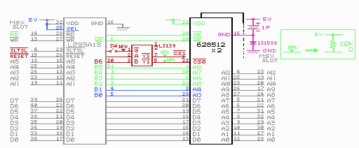

２．道具を手に取る前に
まず、回路図をよく見てください。
回路図では青、緑、赤、ピンクでかかれた部分が主な工作場所を示しています。
灰色の部分は、元々の基板により配線されているので、工作する必要はありません。
- LS139の5VとGND及び使用しない入力ピンは省略してあります。
- SRAMが2個の場合（1MB版を作る場合）、22番ピンのCS以外は全く同じ配線です。
- SRAMが1個の場合（512kB版を作る場合）、/Y3−/CS1の部分（10KΩの抵抗を含む）がなくなります。
- “▼”でかかれた部分は、図の右の方にかかれている通り、10KΩの抵抗を介して5Vにつながっています。

配線は極力基板の裏側に通すとすっきりします。
 次へ
次へ